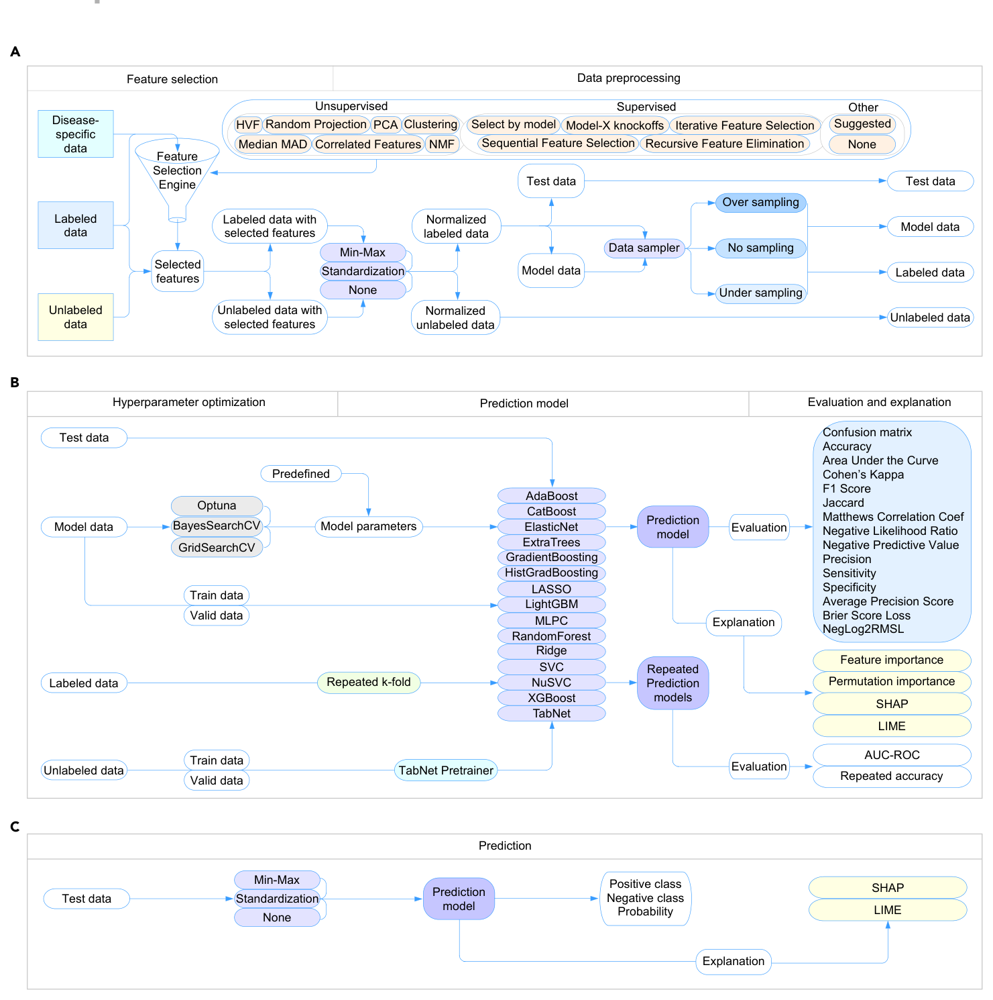
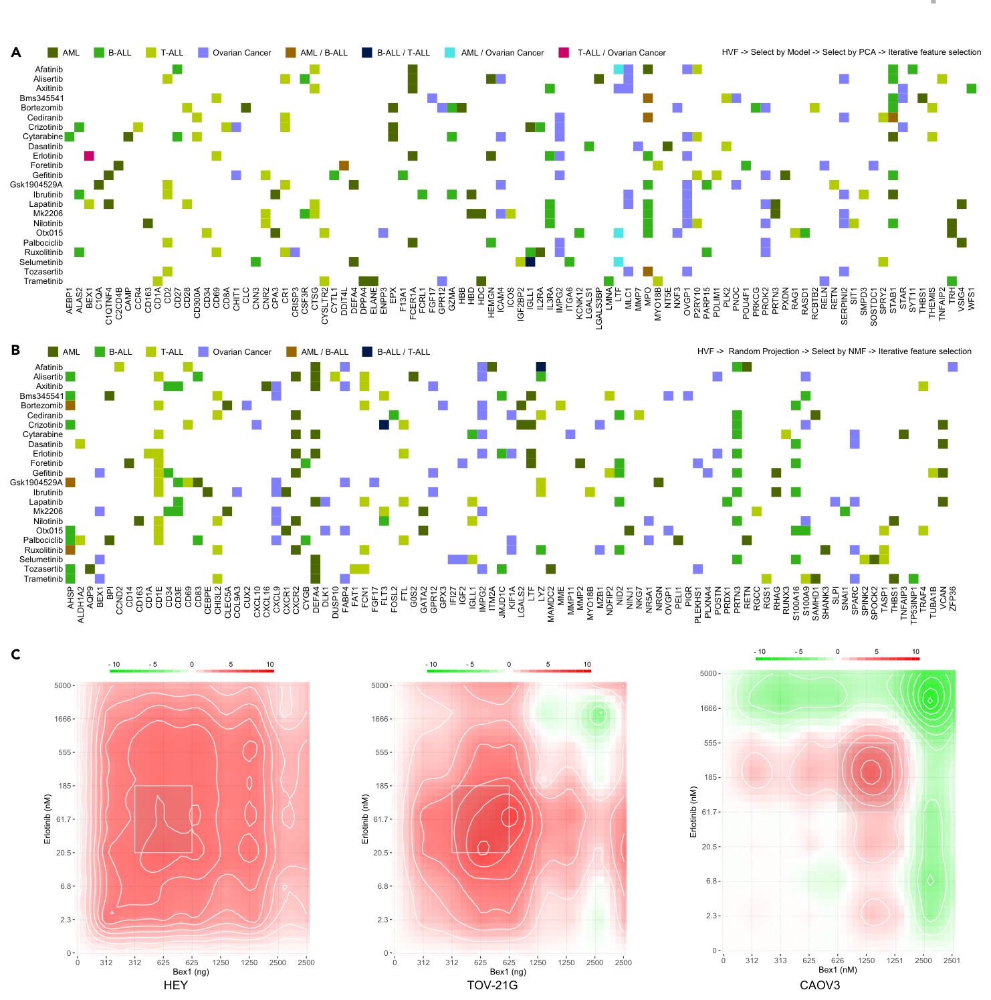
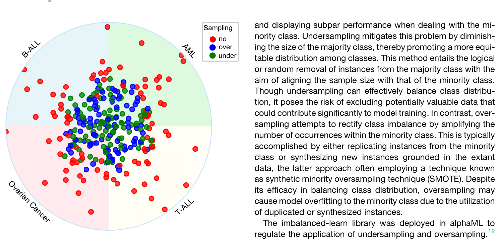
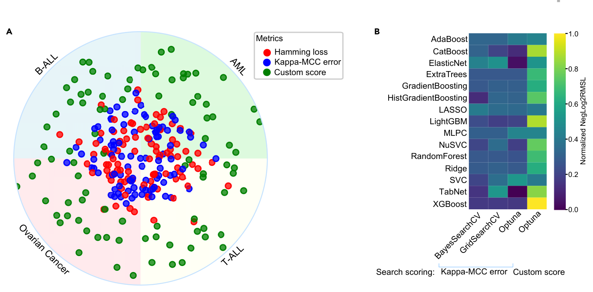
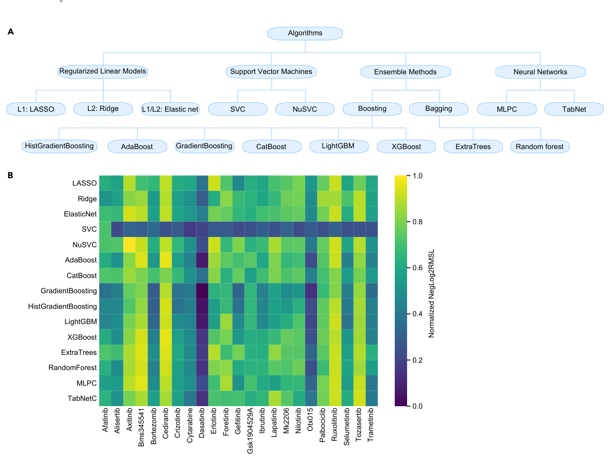
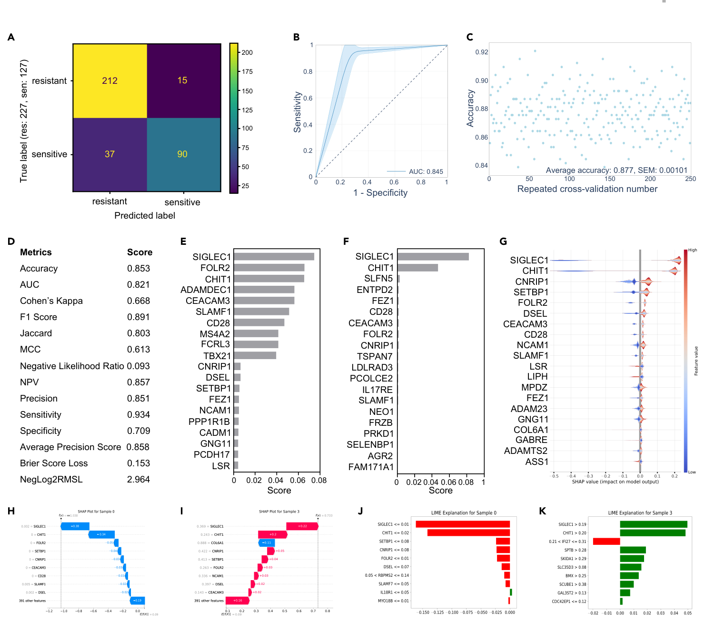
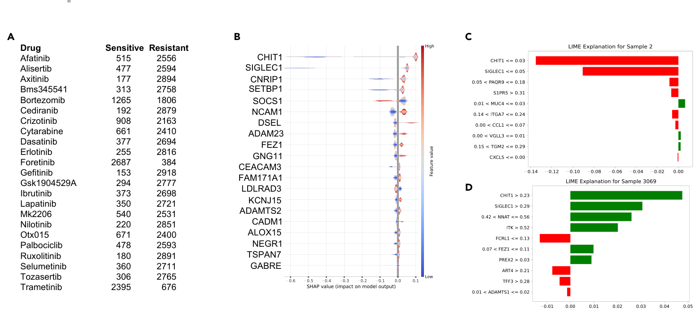
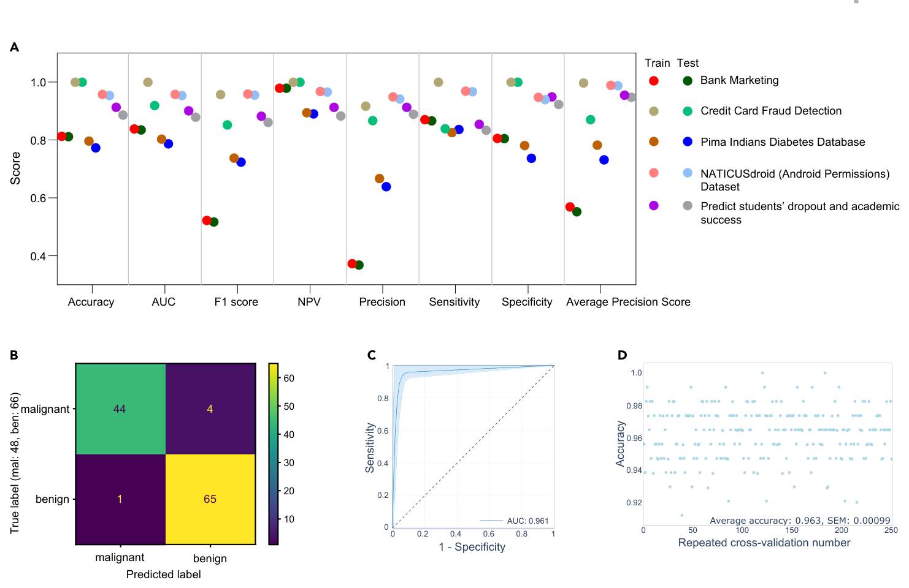

Ringkasan Eksekutif untuk Peneliti (4 Poin Kunci)
1. Masalah Utama: Sebagian besar alat machine learning di bidang onkologi dan genomik menuntut penguasaan sintaks Python/R tingkat tinggi atau hadir sebagai sistem otomatis (AutoML) "kotak hitam" yang rentan mengalami overfitting pada data tabular berdimensi tinggi.
2. Konsep CLETE: AlphaML dirancang dengan prinsip CLETE (Clear, Legible, Explainable, Transparent, Elucidative). Menawarkan antarmuka visual (GUI) yang memandu peneliti mulai dari normalisasi, seleksi fitur, penyetelan hiperparameter, hingga interpretasi prediksi.
3. Dua Inovasi Metrik Evaluasi: Mengintegrasikan custom_score dalam pencarian Optuna untuk mencegah overfitting dengan menimbang kesenjangan akurasi train vs validasi, serta metrik komposit NegLog2RMSL yang menggabungkan 7 indikator kesalahan ke dalam satu skala terstandar.
4. Pembuktian Klinis & Lintas Domain: Divalidasi menggunakan data farmakogenomik 23 inhibitor pada 4 tipe kanker (AML, B-ALL, T-ALL, Ovarium), mengonfirmasi peran biomarker BEX1, SIGLEC1, dan CHIT1, serta sukses diuji pada 6 dataset publik non-biologis (finansial, deteksi fraud, dan akademik).
1. Dilema 'Kotak Hitam' dalam Prediksi Terapi Kanker
Dalam era kedokteran presisi, algoritma pembelajaran mesin (machine learning) telah menjadi instrumen utama untuk memprediksi sensitivitas sel tumor terhadap agen terapeutik. Dengan memanfaatkan profil ekspresi gen mikroarray maupun sekuensing RNA (RNA-seq), model komputasi diharapkan mampu memetakan obat mana yang paling manjur bagi profil genetik pasien tertentu. Namun, penerapan klinisnya di laboratorium biomedis kerap terhambat oleh jurang keahlian teknis: sebagian besar peneliti laboratorium basah (wet-lab biologists) tidak memiliki waktu untuk mendalami bahasa pemrograman tingkat tinggi seperti Python atau R.
Di sisi lain, platform otomatisasi pembelajaran mesin (AutoML) yang ada saat ini—seperti Auto-WEKA atau versi awal Auto-Sklearn—sering kali beroperasi bagaikan "kotak hitam" yang kaku. Algoritma optimasi hiperparameter konvensional cenderung memusatkan pencarian hanya pada skor validasi tertinggi, tanpa memperhitungkan disparitas antara performa data latih (training) dan data validasi. Akibatnya, model yang tampak perkasa di tahap validasi kerap tumbang akibat overfitting saat diuji pada data independen.
Untuk menjawab tantangan ini, konsorsium peneliti yang dipimpin oleh Dr. Julhash U. Kazi di Universitas Lund, Swedia, memperkenalkan AlphaML. Platform ini tidak hanya menyediakan antarmuka grafis (GUI) yang intuitif tanpa perlu menulis sebaris kode pun, melainkan mengusung filosofi desain CLETE: Clear (Jelas), Legible (Mudah dibaca), Explainable (Dapat dijelaskan), Transparent (Transparan), dan Elucidative (Menerangkan secara lugas).
2. Arsitektur Modular AlphaML dan Alur Kerja Prediksi
AlphaML membedah seluruh siklus rekayasa pembelajaran mesin menjadi modul-modul independen yang dapat disesuaikan pengguna. Alur kerja sistem terbagi menjadi tiga fase utama: manajemen data dan prapemrosesan, konstruksi serta evaluasi model, dan modul inferensi mandiri untuk data klinis baru.

Modul manajemen data secara otomatis memverifikasi ketersediaan berkas di direktori lokal komputer (folder alphaML_data di Documents). Jika berkas tidak ditemukan, sistem akan secara mandiri mengunduh dataset contoh dari repositori FigShare. Untuk data ekspresi gen, AlphaML mendukung integrasi data terlogaritma (log2) yang dinormalisasi melalui perkakas bioinformatika seperti edgeR atau iDEP.

Pemisahan modul prediksi (Gambar 1C) sebagai unit mandiri memungkinkan klinisi menggunakan model yang telah dilatih sebelumnya untuk mengklasifikasikan data sekuensing pasien baru secara instan, lengkap dengan visualisasi faktor genetik penentu keputusan model.
3. Menjinakkan Dimensi Tinggi: Modul Seleksi Fitur Bertahap
Data biologis seperti transkriptomik kerap memiliki puluhan ribu gen (fitur) namun hanya memuat puluhan atau ratusan sampel pasien—sebuah kondisi klasik yang rentan terhadap fenomena curse of dimensionality. AlphaML menyediakan fleksibilitas seleksi fitur yang belum pernah ada pada perangkat lunak sejenis: pengguna dapat menjalankan hingga empat metode seleksi fitur secara berurutan (sequential feature selection).
Pendekatan ini memungkinkan peneliti melakukan penyaringan kasar terlebih dahulu menggunakan metode tanpa pengawasan (unsupervised) seperti identifikasi fitur bervariabilitas tinggi (HVF) atau Median dari Median Absolute Deviation (MedianMAD). Setelah ribuan fitur yang tidak informatif disingkirkan, metode reduksi seperti Random Projection, PCA, atau NMF dapat diaplikasikan sebelum menyerahkan subset fitur terpilih ke algoritma terawasi yang menuntut beban komputasi intensif, seperti Recursive Feature Elimination (RFE) atau Model-X Knockoffs.

Sebagaimana diperlihatkan pada Gambar 2C, seleksi fitur terarah ini tidak sekadar menghasilkan metrik matematika yang bagus, melainkan mengungkap interaksi biologis nyata: overekspresi gen BEX1 terbukti secara in vitro memicu sinergi mematikan sel kanker ovarium ketika dikombinasikan dengan inhibitor tirosin kinase erlotinib.
4. Mitos Penyeimbangan Data: Mengapa 'No Sampling' Justru Unggul?
Ketidakseimbangan kelas (class imbalance) merupakan kendala klasik dalam klasifikasi biner, di mana jumlah sampel pasien resisten sering kali jauh melampaui pasien sensitif. Praktik umum dalam komunitas data sains sering kali langsung menerapkan teknik oversampling sintetis (seperti SMOTE) atau pemotongan kelas mayoritas (undersampling).
Namun, temuan empiris AlphaML pada 23 inhibitor dan empat model penyakit menyingkap fenomena mengejutkan: metode tanpa sampling ('no sampling') secara konsisten melampaui performa oversampling maupun undersampling (Gambar 3).

Penjelasan di balik fenomena ini adalah bahwa oversampling dapat memicu overfitting karena melipatgandakan varians buatan pada kelas minoritas, sedangkan undersampling membuang informasi biologis bernilai tinggi. Sebagai gantinya, AlphaML mempertahankan proporsi alami data namun menyematkan bobot penalti ketidakseimbangan kelas (class imbalance weights) langsung ke dalam fungsi kerugian (loss function) algoritma. Terlebih lagi, AlphaML mempartisi data uji sebelum proses sampling apa pun dijalankan, menjamin tidak adanya kebocoran data (data leakage).
5. Inovasi Metrik: custom_score dan NegLog2RMSL
Salah satu kontribusi terpenting dari paper ini adalah perumusan dua fungsi evaluasi khusus untuk menghentikan kecenderungan overfitting algoritma optimasi hiperparameter (seperti Optuna, Bayesian Search, dan GridSearch).

custom_score (hijau) menghasilkan nilai NegLog2RMSL tertinggi dibanding penalti Hamming loss (merah) atau kappa_mcc_error (biru);
(B) Heatmap Komparasi Metode Pencarian: Kombinasi algoritma pencarian Optuna yang dipandu oleh custom_score menghasilkan skor generalisasi paling konsisten pada data uji T-ALL dengan inhibitor trametinib.
6. Komparasi 15 Algoritma: Dominasi Metode Ensemble
AlphaML tidak membatasi pengguna pada pustaka standar scikit-learn saja, melainkan menyatukan algoritma-algoritma terdepan untuk data tabular ke dalam empat rumpun arsitektur:

| Kategori Model | Algoritma | Karakteristik & Keunggulan Khusus |
|---|---|---|
| Linear Teregulasi | LASSO (L1), Ridge (L2), ElasticNet | Menyusutkan koefisien untuk mencegah overfitting; LASSO mampu mengeliminasi fitur menjadi nol. |
| Support Vector Machines | SVC, NuSVC | Membangun hyperplane pemisah berjarak maksimum; efektif pada ruang dimensi tinggi melebihi jumlah sampel. |
| Ensemble (Boosting) | XGBoost, LightGBM, CatBoost, AdaBoost, GradBoost, HistGradBoost | Mengoreksi residu error secara sekuensial. Menunjukkan performa tertinggi secara konsisten pada data tabular. |
| Ensemble (Bagging) | RandomForest, ExtraTrees | Mereduksi varians melalui agregasi pohon acak; ExtraTrees merandomisasi titik potong simpul data. |
| Jaringan Saraf (ANN) | MLPC, TabNet | TabNet menyertakan mekanisme atensi sekuensial untuk memilih fitur secara dinamis pada tiap tahap keputusan. |
7. Menembus 'Kotak Hitam': Interpretasi Model dengan SHAP dan LIME
Bagi dokter dan peneliti onkologi, mengetahui prediksi model saja tidaklah cukup; mereka harus memahami mengapa sebuah keputusan diambil. AlphaML mengintegrasikan perkakas Explainable AI (XAI) pada level global (seluruh populasi) dan level lokal (pasien perorangan).

Sebagaimana diilustrasikan pada Gambar 6 dan 7, analisis nilai SHAP mengungkap bahwa ekspresi gen SIGLEC1 dan CHIT1 secara persisten mendikte sensitivitas sel leukemia mieloid akut (AML) terhadap terapi crizotinib.

8. Melampaui Onkologi: Adaptabilitas pada 6 Domain Data Non-Biologis
Meskipun awalnya dirancang untuk farmakogenomik kanker, ketangguhan arsitektur CLETE AlphaML diuji pada enam dataset standar dunia nyata dengan struktur tabular heterogen:
- Bank Marketing: Prediksi keberhasilan kampanye telemarketing perbankan.
- Credit Card Fraud Detection: Klasifikasi transaksi penipuan kartu kredit (kondisi ekstrim imbalanced).
- Pima Indians Diabetes: Diagnosis timbulnya diabetes berdasarkan parameter klinis.
- NATICUSdroid: Deteksi malware Android berdasarkan izin akses (permissions).
- Student Dropout & Academic Success: Prediksi risiko putus kuliah mahasiswa.
- Breast Cancer Wisconsin (Diagnostic): Klasifikasi biopsi tumor payudara (jinak vs ganas).

9. Keterbatasan Operasional dan Aksesibilitas Perangkat Lunak
Terlepas dari segudang keunggulannya, para penulis secara transparan merinci batasan operasional platform AlphaML yang perlu dipahami pengguna:
- Format Input Data: Saat ini platform hanya menerima berkas bertipe
.csvdan mensyaratkan peletakan berkas di folder khususalphaML_datadi dalam direktori Documents komputer. - Penanganan Data Hilang (Missing Values): Secara default, AlphaML mengganti nilai
NaNdengan angka nol tanpa melakukan imputasi statistik otomatis (pengguna disarankan melakukan pra-imputasi dengan alat seperti IterativeImputer dari scikit-learn jika diperlukan). - Encoding Kategori: AlphaML dirancang berbasis label encoding. Untuk data kategorik berskala luas, pengguna disarankan melakukan One-Hot Encoding terlebih dahulu.
- Ambang Batas Korelasi Default: Fitur dengan korelasi di atas 90% secara otomatis disaring untuk mencegah multikolinearitas.
Pustaka Python alphaML dirilis secara sumber terbuka di bawah lisensi CC BY dan dapat diinstal langsung via PyPI:
Kode sumber dan antarmuka GUI tersedia bebas di repositori GitHub resmi: github.com/kazilab/alphaML.
Nasimian, A., Younus, S., Tatli, Ö., Hammarlund, E. U., Pienta, K. J., Rönnstrand, L., & Kazi, J. U. (2024). AlphaML: A clear, legible, explainable, transparent, and elucidative binary classification platform for tabular data. Patterns, 5(1), 100897. https://doi.org/10.1016/j.patter.2023.100897